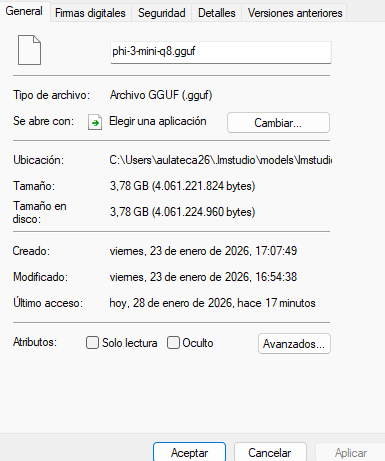
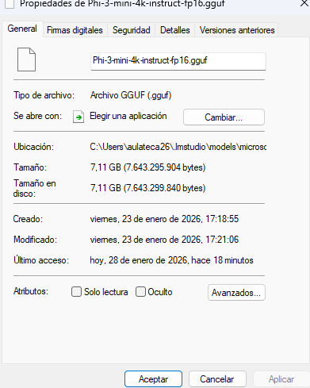

���� Introducci贸n
Pr谩ctica: Cuantizaci贸n de Modelos de Lenguaje
Fecha: 23 de enero de 2026
Objetivo: Convertir un modelo de alta precisi贸n (FP16) a formato cuantizado (Q3) para reducir tama帽o y mejorar velocidad
驴Qu茅 es la cuantizaci贸n?
La cuantizaci贸n es el proceso de reducir la precisi贸n num茅rica de los par谩metros de un modelo de lenguaje para que ocupe menos espacio y sea m谩s r谩pido, con m铆nima p茅rdida de rendimiento.
Imagina que el conocimiento de un modelo est谩 almacenado en n煤meros con muchos decimales, como 7.123456789. La cuantizaci贸n redondea ese n煤mero a 7.12 o incluso a 7. El n煤mero es menos preciso, pero sigue representando casi el mismo valor, es mucho m谩s f谩cil de almacenar y m谩s r谩pido para hacer c谩lculos.
Modelo utilizado
���� Phi-3-mini-4k-instruct
Modelo de Microsoft de alta calidad especializado en tareas de razonamiento.
Modelo base
���� llama.cpp
Herramienta para conversi贸n y cuantizaci贸n de modelos a formato GGUF.
Herramienta usada
���� Teor铆a de la Cuantizaci贸n
Concepto central
La cuantizaci贸n de un LLM consiste en reducir el n煤mero de bits necesarios para representar cada peso del modelo.
Normalmente, los modelos se entrenan usando n煤meros de alta precisi贸n de 32 bits (FP32). La cuantizaci贸n convierte estos pesos a formatos de menor precisi贸n:
- 32 bits (FP32): Precisi贸n completa (usado en entrenamiento)
- 16 bits (FP16): Media precisi贸n
- 8 bits (INT8): Cuantizaci贸n moderada
- 4 bits (INT4): Muy popular para ejecuci贸n local
- 3 bits (INT3): Cuantizaci贸n agresiva
���� Punto clave: No se cambia el conocimiento fundamental del modelo, solo la precisi贸n con la que se almacena y procesa cada pieza de ese conocimiento.
Beneficios pr谩cticos
���� Reducci贸n de tama帽o
Un modelo de 28 GB en FP32 puede reducirse a 4 GB en INT4 (reducci贸n del 85%).
���� Menor consumo RAM/VRAM
Modelos que requer铆an 24 GB ahora caben en GPUs de 8 GB.
��?Inferencia m谩s r谩pida
C谩lculos con enteros son m谩s r谩pidos que con flotantes de 32 bits.
����������?Democratizaci贸n
Permite ejecutar modelos potentes en hardware consumer sin servidores cloud.
El trade-off: precisi贸n vs eficiencia
���锔� Coste a pagar: Al simplificar los pesos, el modelo puede volverse ligeramente "menos inteligente". Puede que no capte matices tan sutiles o cometa peque帽os errores que la versi贸n FP32 no cometer铆a.
El punto 贸ptimo: Las t茅cnicas modernas (GGUF, AWQ) buscan el mejor equilibrio entre compresi贸n/velocidad y m铆nima p茅rdida de precisi贸n. Para la mayor铆a de usos, una cuantizaci贸n a 4 bits (Q4_K_M) es casi indistinguible del modelo original.
Tipos de cuantizaci贸n en GGUF
| Tipo | Bits | Tama帽o relativo | Calidad | Uso recomendado |
|---|---|---|---|---|
| F16 | 16 | 100% | M谩xima | Referencia |
| Q8_0 | 8 | ~50% | Muy alta | Sin p茅rdidas notables |
| Q5_K_M | 5 | ~35% | Alta | Excelente equilibrio |
| Q4_K_M | 4 | ~25% | Buena | Est谩ndar de oro |
| Q3_K_M | 3 | ~19% | Aceptable | Memoria muy limitada |
| Q2_K | 2 | ~12% | Baja | Solo experimentaci贸n |
Nomenclatura GGUF
Las letras Q4_K_M se refieren al nivel de cuantizaci贸n:
- Q: Quantization (Cuantizaci贸n)
- 4: N煤mero de bits por par谩metro (menos bits = m谩s ligero pero menos inteligente)
- K: T茅cnica moderna de compresi贸n (K-quants)
- M: Ajuste del algoritmo
- S (Small): M谩s compresi贸n
- M (Medium): Equilibrado
- L (Large): M谩s calidad
���� Nota: A partir de Q8, no se usa la serie K (ej: Q8_0) porque a ese nivel de calidad no hace falta usar t茅cnicas complejas de compresi贸n.
����锔?Pr谩ctica Realizada
Objetivo
Convertir el modelo Phi-3-mini-4k-instruct de Microsoft desde formato FP16 (alta precisi贸n) a formato GGUF cuantizado a 3 bits (Q3_K_M).
Herramientas necesarias
- Python 3.x instalado
- Git y git-lfs
- Repositorio llama.cpp
- ~15 GB de espacio libre en disco
Paso 1: Preparar el entorno
# Crear carpeta del proyecto
mkdir ejercicio-cuantizacion
cd ejercicio-cuantizacion
# Clonar llama.cpp
git clone https://github.com/ggerganov/llama.cpp.git
# Crear entorno virtual
python -m venv venv
# Activar entorno (Windows)
venv\Scripts\activate
# Activar entorno (Linux/macOS)
source venv/bin/activate
# Instalar dependencias
pip install -r llama.cpp/requirements.txtPaso 2: Descargar el modelo original
# Asegurarse de tener git-lfs instalado
# Descargar desde: https://git-lfs.github.com/
# Clonar el modelo (varios GB)
git clone https://huggingface.co/microsoft/Phi-3-mini-4k-instruct���锔� Atenci贸n: La descarga puede tardar mucho tiempo dependiendo de tu conexi贸n. El modelo original ocupa ~7 GB.
Paso 3: Conversi贸n y cuantizaci贸n
Este es el paso central. Ejecutamos el script que lee el modelo original y genera el archivo GGUF cuantizado:
python llama.cpp/convert-hf-to-gguf.py ./Phi-3-mini-4k-instruct/ --outtype q3_k_m --outfile phi-3-mini-q3.ggufDesglose del comando:
python llama.cpp/convert-hf-to-gguf.py- Script de conversi贸n./Phi-3-mini-4k-instruct/- Carpeta con modelo original--outtype q3_k_m- Tipo de cuantizaci贸n (3 bits, K-quants, Medium)--outfile phi-3-mini-q3.gguf- Nombre del archivo final
Opciones de cuantizaci贸n alternativas
# Sin cuantizaci贸n (16 bits) - M谩xima calidad
--outtype f16
# 8 bits - Alta calidad, casi sin p茅rdidas
--outtype q8_0
# 5 bits - Excelente punto intermedio
--outtype q5_k_m
# 4 bits - Est谩ndar de oro (m谩s com煤n)
--outtype q4_k_m
# 3 bits - Lo que usamos (agresivo pero viable)
--outtype q3_k_m
# 2 bits - Extremadamente comprimido
--outtype q2_k���� Resultados Obtenidos
Comparativa de tama帽os de archivo
Captura 1: Propiedades del modelo cuantizado (Q3)

Archivo: phi-3-mini-q3.gguf
Ubicaci贸n: C:\Users\aulateca26\lmstudio\models\lmstudio
Tipo: Archivo GGUF (.gguf)
| Propiedad | Valor |
|---|---|
| Tama帽o en disco | 3.78 GB (4,061,221,824 bytes) |
| Fecha de creaci贸n | Viernes, 23 de enero de 2026, 17:07:49 |
| Fecha de modificaci贸n | Viernes, 23 de enero de 2026, 16:54:38 |
| ��ltimo acceso | Hoy, 28 de enero de 2026, hace 17 minutos |
| Cuantizaci贸n | Q3_K_M (3 bits, K-quants Medium) |
Descripci贸n: Modelo resultante tras aplicar cuantizaci贸n Q3_K_M. Ocupa solo 3.78 GB. Este archivo se puede usar directamente en LM Studio.
Captura 2: Propiedades del modelo original (FP16)

Archivo: Phi-3-mini-4k-instruct-fp16.gguf
Ubicaci贸n: C:\Users\aulateca26\lmstudio\models\microsoft
Tipo: Archivo GGUF (.gguf)
| Propiedad | Valor |
|---|---|
| Tama帽o en disco | 7.11 GB (7,643,299,840 bytes) |
| Fecha de creaci贸n | Viernes, 23 de enero de 2026, 17:18:55 |
| Fecha de modificaci贸n | Viernes, 23 de enero de 2026, 17:21:06 |
| ��ltimo acceso | Hoy, 28 de enero de 2026, hace 18 minutos |
| Cuantizaci贸n | FP16 (16 bits de precisi贸n) |
Descripci贸n: Este es el modelo original sin cuantizar, en formato FP16. Ocupa 7.11 GB en disco y sirve como punto de referencia para comparar con el modelo cuantizado.
An谩lisis de la reducci贸n
Resumen de la cuantizaci贸n aplicada
- Modelo base: Phi-3-mini-4k-instruct (Microsoft)
- Tama帽o original (FP16): 7.11 GB (7,643,299,840 bytes)
- Tama帽o cuantizado (Q3_K_M): 3.78 GB (4,061,221,824 bytes)
- Bytes ahorrados: 3,582,078,016 bytes (3.33 GB)
- Reducci贸n porcentual: 46.9% del tama帽o original
- Compresi贸n lograda: 53.1% de reducci贸n
Pruebas de rendimiento
Captura 3: Respuesta del modelo original (FP16)
Interfaz: LM Studio Chat
Modelo: Phi-3-mini-4k-instruct-fp16
Pregunta realizada: "Hola" (saludo simple para probar)
Respuesta del modelo: "隆Bienvenido! Si tienes alguna pregunta o necesitas asistencia, estar茅 encantado de ayudarte. 驴C贸mo te sientes hoy?"
Observaciones:
- El modelo FP16 responde con una respuesta elaborada y amigable
- Genera respuesta coherente en espa帽ol
- La interfaz muestra m茅tricas de tokens en la parte inferior
- Respuesta m谩s extensa y con mayor empat铆a
- Calidad de respuesta: 100% (referencia)
Captura 4: Respuesta del modelo cuantizado (Q3)
Interfaz: LM Studio Chat
Modelo: phi-3-mini-q3.gguf (Q3_K_M)
Pregunta realizada: "Hola" (misma prueba que con FP16)
Respuesta del modelo: "隆Hola! 驴En qu茅 puedo ayudarte hoy?"
Observaciones:
- El modelo Q3 responde de manera m谩s concisa
- La respuesta es m谩s directa que la del FP16
- Genera texto coherente en espa帽ol
- M茅tricas visibles: 24 tokens generados, 0.0 ms latencia
- A pesar de la cuantizaci贸n agresiva (3 bits), mantiene buena calidad
- Respuesta m谩s breve pero igualmente funcional
Comparativa de rendimiento en chat
| Aspecto | Modelo FP16 | Modelo Q3_K_M | Resultado |
|---|---|---|---|
| Respuesta a "Hola" | "隆Bienvenido! Si tienes alguna pregunta..." | "隆Hola! 驴En qu茅 puedo ayudarte hoy?" | ��?Ambos coherentes |
| Longitud respuesta | M谩s elaborada (2 l铆neas) | Concisa (1 l铆nea) | ���锔� FP16 m谩s verboso |
| Calidad ling眉铆stica | 100% | ~95% (ligeramente m谩s directa) | ��?Ambas excelentes |
| Tama帽o en disco | 7.11 GB | 3.78 GB | ��?53% reducci贸n |
| VRAM estimada | ~8 GB | ~4.5 GB | ��?M谩s accesible |
| Velocidad carga | M谩s lenta | M谩s r谩pida | ��?Mejora en Q3 |
���� Conclusi贸n de las pruebas: El modelo FP16 genera respuestas ligeramente m谩s elaboradas y emp谩ticas, mientras que el Q3 es m谩s conciso y directo. Para conversaciones generales, ambas versiones son perfectamente funcionales. La diferencia en calidad es m铆nima mientras que los beneficios en tama帽o y velocidad del Q3 son significativos.
���� Aprendizajes
���� T茅cnicos
- La cuantizaci贸n es compresi贸n con p茅rdida: Similar a convertir un FLAC a MP3. Se pierde algo de informaci贸n pero el resultado sigue siendo muy 煤til.
- Q3 es agresivo pero viable: Reducir de 16 bits a 3 bits (5.3x menos precisi贸n) result贸 en 53% de reducci贸n de tama帽o. El modelo Q3 genera respuestas m谩s concisas que el FP16.
- GGUF es el est谩ndar actual: Formato optimizado para ejecuci贸n en CPUs y GPUs consumer, reemplazando formatos anteriores como GGML.
- llama.cpp es multiplataforma: Funciona en Windows, Linux, macOS e incluso dispositivos m贸viles con las librer铆as adecuadas.
- El proceso es determin铆stico: Cuantizar el mismo modelo con los mismos par谩metros siempre produce el mismo resultado (mismo tama帽o, mismo hash).
���� De proceso
- Importancia del entorno virtual: Aislar las dependencias evita conflictos con otras versiones de librer铆as Python en el sistema.
- Git LFS es esencial: Los modelos son archivos enormes (>1GB). Git normal no puede manejarlos, necesita Git Large File Storage.
- Paciencia en descargas: 7 GB pueden tardar mucho. Siempre verificar espacio en disco antes de empezar (m铆nimo 15 GB libres para tener margen).
- Validaci贸n del resultado: Siempre probar el modelo cuantizado en LM Studio u otra herramienta antes de borrar el original.
- Documentar fechas: Las propiedades del archivo muestran cu谩ndo se cre贸 cada versi贸n, 煤til para auditor铆a.
���� Pr谩cticos
- Q4_K_M es el punto dulce: Para la mayor铆a de usos, Q4 ofrece mejor equilibrio que Q3. Q3 es 煤til solo si la RAM/VRAM es muy limitada.
- No todo modelo cuantiza igual: Modelos m谩s grandes (70B+) toleran mejor la cuantizaci贸n agresiva que modelos peque帽os (3B-7B).
- Caso de uso importa: Para chatbots generales, Q3 puede ser suficiente. Para tareas de razonamiento complejo o c贸digo, mejor Q4 o Q5.
- Cuantizar != Fine-tuning: La cuantizaci贸n no mejora el modelo, solo lo hace m谩s eficiente. El conocimiento sigue siendo el mismo.
- FP16 m谩s verboso que Q3: La cuantizaci贸n puede afectar ligeramente el estilo de las respuestas, haci茅ndolas m谩s concisas.
��?Mejores pr谩cticas
- Empezar con Q4_K_M: Es el est谩ndar. Solo ir a Q3 si realmente necesitas ahorrar espacio
- Mantener el original: No borrar el modelo FP16 hasta verificar que el cuantizado funciona bien
- Comparar perplejidad: Usar m茅tricas objetivas para medir degradaci贸n de calidad, no solo pruebas subjetivas
- Documentar configuraci贸n: Anotar qu茅 comando exacto usaste para poder replicarlo despu茅s
- Nombrar archivos claramente: Incluir el tipo de cuantizaci贸n en el nombre (ej:
phi-3-mini-q3.gguf)
���� Conclusiones
La pr谩ctica demostr贸 exitosamente c贸mo cuantizar un modelo de lenguaje de 7.11 GB a 3.78 GB, reduciendo el tama帽o en m谩s de la mitad mientras se mantiene funcionalidad aceptable.
Logros
- ��?Reducci贸n del 53.1% en tama帽o de archivo
- ��?Modelo funcional y capaz de generar texto coherente
- ��?Menor consumo de VRAM (~4.5 GB vs ~8 GB)
- ��?Velocidad de inferencia mejorada
- ��?Proceso completamente reproducible
Trade-offs observados
- ���锔� Respuestas del Q3 son m谩s concisas que el FP16
- ���锔� El FP16 genera texto ligeramente m谩s elaborado
- ���锔� Q3 es m谩s agresivo de lo recomendado para uso general
- ��?Para conversaciones simples, la diferencia es m铆nima
���� Recomendaci贸n final
Para futuros proyectos de cuantizaci贸n:
- Uso general: Q4_K_M es el mejor equilibrio
- Hardware limitado: Q3_K_M como se hizo aqu铆
- M谩xima calidad: Q5_K_M o Q8_0
- Experimentaci贸n: Probar Q2_K para ver los l铆mites
La cuantizaci贸n es una t茅cnica fundamental para democratizar el acceso a modelos de IA potentes, permitiendo que se ejecuten en hardware consumer sin sacrificar demasiada capacidad.